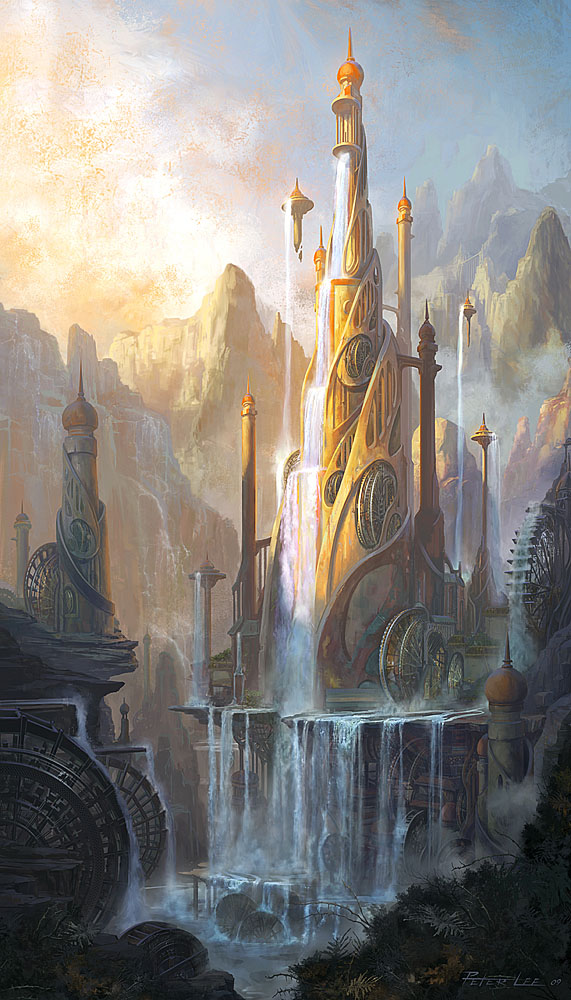
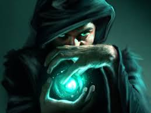

High fantasy
  Jest to najbardziej "typowa" wariacja fantasy. W utworach tego typu akcja rozgrywa się w skrajnie odległym od naszego świecie rządzącym się innymi prawami. Magia i nadnaturalne moce są tam powszechne. Oprócz ludzi występują tam mityczne rasy takie jak np: elfy, krasnoludy, trolle, gobliny, orkowie, nagi, wampiry i wilkołaki. Budowa świata wzorowana jest na feudalnym średniowieczu.Fabuła zwykle skupiona jest na wielkich konfliktach z nadnaturalnymi, złymi mocami. Zazwyczaj protagonistą jest jeden bohater, a opowieść skupia się wokół jego/jej przeznaczenia, albo tajemniczej natury. W wielu powieściach bohater jest sierotą z nieprzeciętnym talentem do magii, lub walki. Innymi słowy bohater został wychowany samotnie z jego własnym, niepowtarzalnym charakterem i duszą. W wielu książkach obecny jest również mistyczny mentor/nauczyciel. Zwykle jest on potężnym wojownikiem. lub magiem, który służy głównemu bohaterowi radą i pomocą.